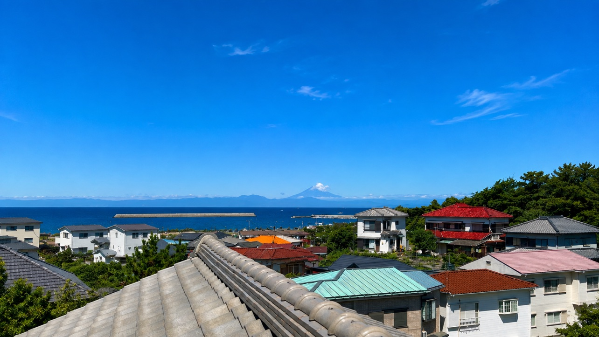
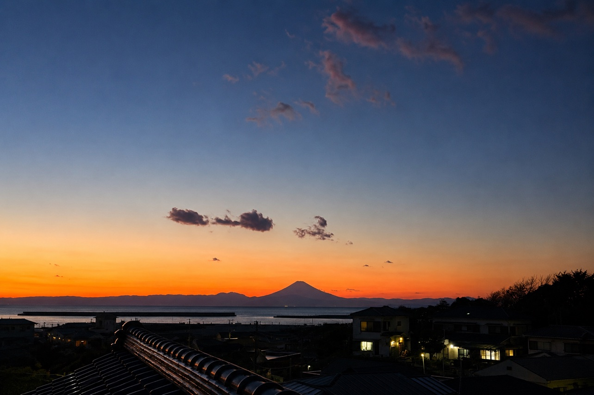
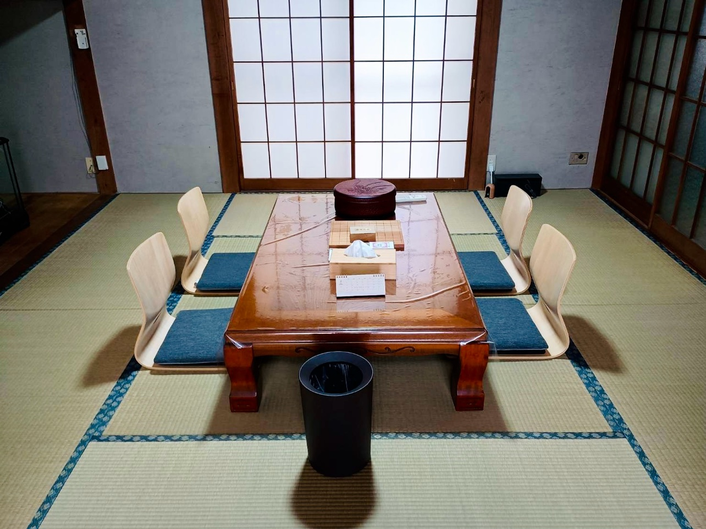
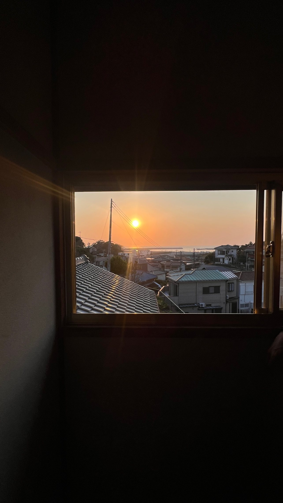
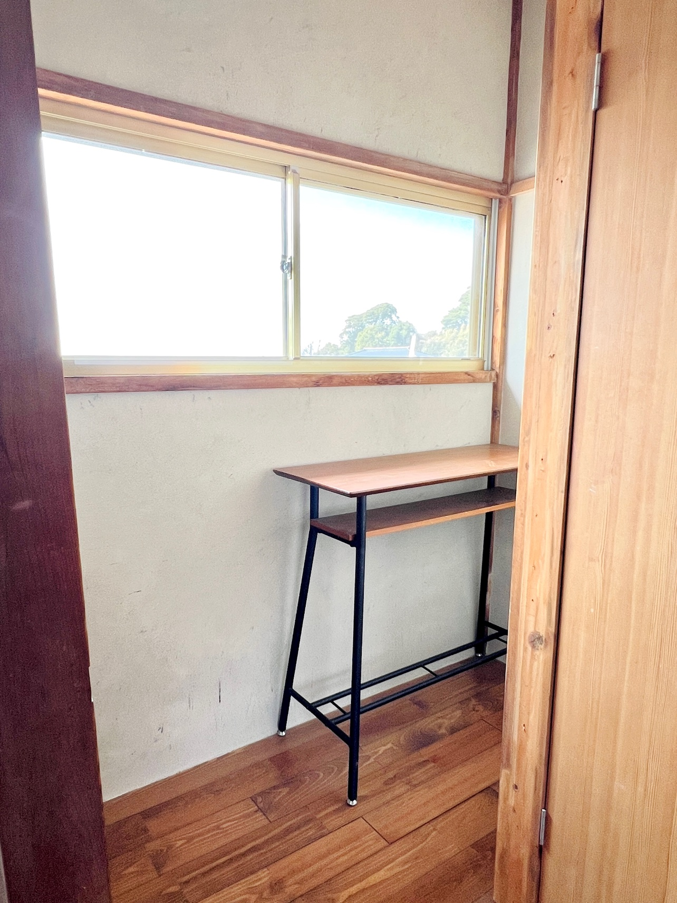
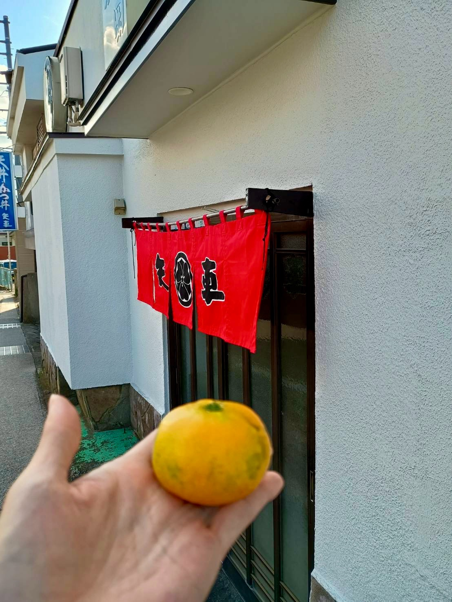

2階のサンルームから見える、夕日です。 窓の向こうは、海と港町の屋根。 夕方は、こんなふうに日が沈んでいきます。

富士山と港を望む高台
富士山と港を望む高台に建つ宿です。
三崎港徒歩圏｜富士山と港を見渡せる
貸切の古民家｜無料駐車場
富士山と港を望む高台に建つ、昭和レトロな古民家宿「桃（tou）」約300㎡の庭を備えた静かな一棟貸切の宿です。

富士山と港を望む高台に建つ、昭和レトロな古民家宿「桃（tou）」約300㎡の庭を備えた静かな一棟貸切の宿です。城ヶ島や三崎港観光の拠点としてはもちろん、自然に囲まれてゆったり過ごしたい方にもおすすめです。
敷地面積303㎡に庭(整備中)と5DKの古民家があります。懐かしい雰囲気の玄関、レトロなタイルのお風呂、庭を眺めながらくつろげる和室。三崎に関連する本や、三浦半島カルタなどの雨の日でも楽しめるグッズも揃えています。
階段を下った先に広がる、大きな庭がこの宿の特徴です。約30種類の植物が季節ごとに表情を変え、春から秋にかけては花や緑を楽しめます。ベンチに座って本を読んだり、ゆっくりお茶を飲んだり。観光だけでなく、「何もしない贅沢」を味わえる空間です。
魅力は、眺めと古民家の味わいです。高台から港と海を見渡せて、晴れた日には富士山も見えます。夕方は、サンルームから夕日を眺めるのがいちばんの時間です。

富士山と港を望む高台に建つ宿です。
富士山と港を望む高台からの夕景です。

庭を眺めながらくつろげる和室があります。

2階のサンルームからは、夕日と海が見えます。晴れた日には富士山も見えます。
平面図と配置図です。図をタップすると大きく表示されます。
1階：和室6帖・和室8帖、台所、浴室、玄関、洋室6帖／2階：和室6帖×2、押入、廊下。2階側に富士山・海の眺望の向きが示されています。
タップで拡大 →
敷地内の建物と庭の配置です。階段を下った先に庭が広がります。
タップで拡大 →
写真をタップすると大きく表示されます。
矢印ボタンやスワイプで、他の投稿も見られます。
2階のサンルームから見える、夕日です。 窓の向こうは、海と港町の屋根。 夕方は、こんなふうに日が沈んでいきます。

窓辺に、小さな机があります。 手紙を書くのも、本を読むのも、 ただ座って外を眺めるのも。 宿の中で、好きな場所のひとつです。
庭の南天が、赤くなってきました。 派手な庭ではないけれど、 季節ごとの小さな変化はあります。 三崎の秋も、少しずつ深まってきました。
庭の片隅に、小さな白い花が咲いていました。 名前は知らない花です。 でも、この時期にひっそり咲いているのを見ると、 少し嬉しくなります。
庭の水仙が咲きました。 寒い時期に、甘い香りのする花です。 三浦の水仙は、12月下旬からが見頃。
近くの抱井良造商店で買ったお酒を、 酒器でのんびり楽しむ夜。 静かな部屋で一杯。 テレビはないので、 話すか、ぼーっとするか。 そんな夜が過ごせる宿です。

いつも行っている町中華「矢車」で、みかんをいただきました。 「持っていきな」と手渡されるやり取りが、普通にある街。 こういうところが、三崎の素朴でいいところだなと思います。 ちなみに矢車は、宿の最寄りバス停「三崎東岡」の目の前です。 バスでお越しの方は、降りたらすぐ目の前です。
城ヶ島・三崎港・海南神社が近い宿です。
| 所在地 | 神奈川県三浦市三崎・白石町 詳しい住所は、ご予約確定後にご案内します |
|---|---|
| 間取り | 1階: 洋室6畳、和室6畳+8畳の2間、キッチン、洗面所、トイレ、浴室／2階: 和室6畳×2、クローゼット、サンルーム |
| 寝室・定員 | 寝室は2階和室6畳×2（各布団2セット）最大4名 |
| チェックイン | 13:00〜18:00 |
| チェックアウト | 13時まで |
| 駐車場 | 無料で徒歩数分の宿の裏に1台分、設置しています。道幅を考慮してコンパクトカー、軽自動車でのご利用をお願いします。 |
| お願い | 宿まで階段があります。／敷地内は全面禁煙です。／夜間はお静かにお願いします。／BBQ禁止 |
| 旅館業許可 | 第060110号 |
@reborn_miura.inn
Instagramでは、宿と三崎の周辺を動画で紹介しています。宿の部屋や庭の様子、季節の変化、三崎港や城ヶ島など周辺の景色を動画でご覧いただけます。
Instagramで動画を見る